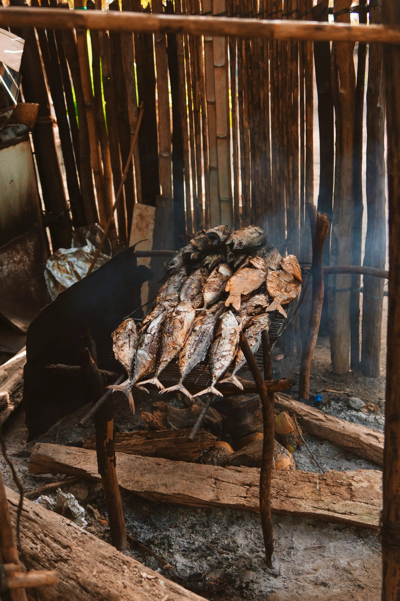
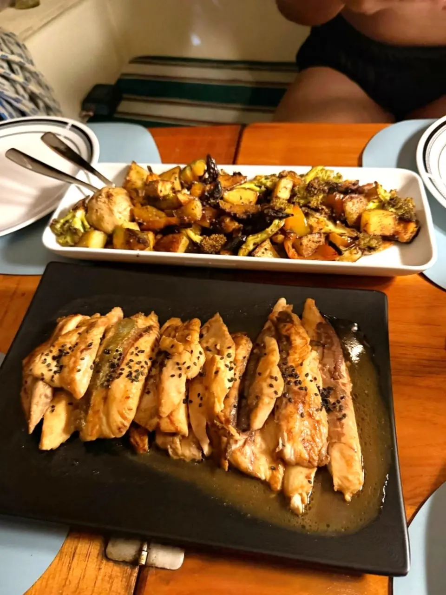
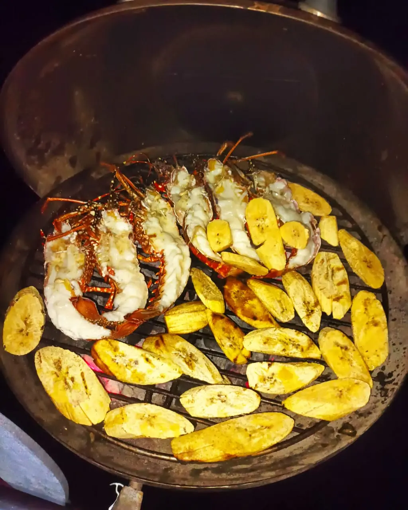
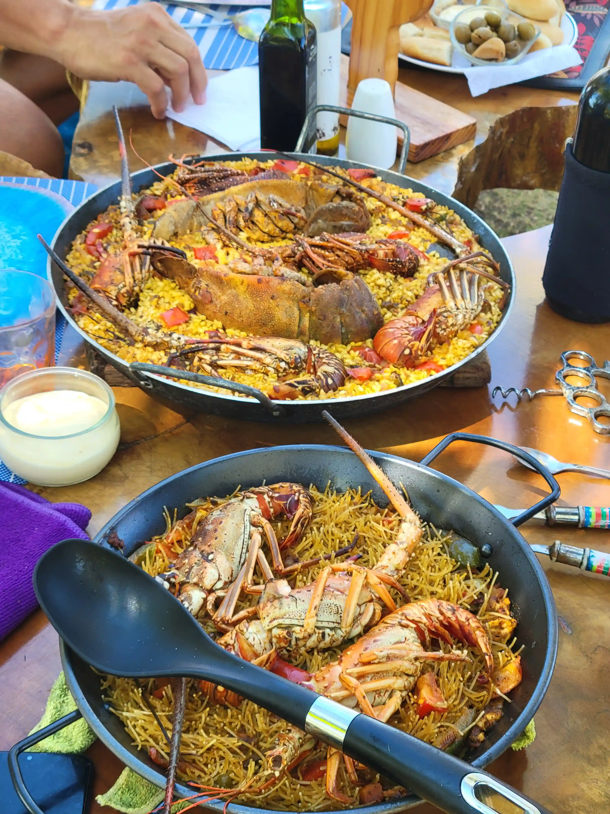

Disfruta los sabores de San Blas
Disfruta de comidas frescas e inspiradas en lo local, preparadas diariamente por nuestro cocinero a bordo. Desde ceviche de mariscos hasta frutas tropicales, cada platillo refleja los vibrantes sabores del Caribe.




